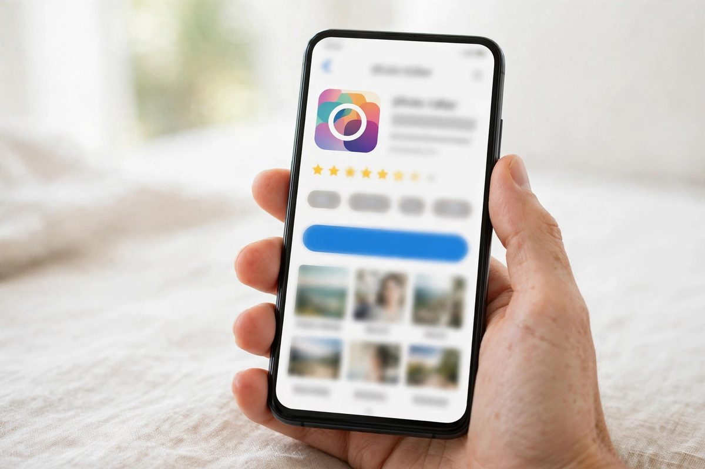

How to Install Lightroom Officially on Android and iPhone

Install on Android from Google Play
Installing the official Lightroom app on Android takes about two minutes, and it is the only safe way to get the app on your phone. Start by opening the Google Play Store app, which is pre-installed on almost every Android phone. Tap the search bar at the top, type "Adobe Lightroom", and look for the app published by Adobe Inc. Check the developer name carefully, because copycat apps with similar names and icons do exist.
Tap "Install" and wait for the download to finish. The app is fairly large, so a Wi-Fi connection is best if your mobile data is limited. Once installed, tap "Open" or find the Lightroom icon on your home screen. The first time you open it, the app will ask for permission to access your photos. Granting this is necessary, because the app cannot edit photos it cannot see. It will also ask you to sign in with an Adobe account or create one for free.
Install on iPhone from the App Store
On iPhone, the process is nearly identical. Open the App Store, tap the search tab at the bottom, and search for "Adobe Lightroom". Again, confirm the developer is Adobe Inc. before downloading. Tap "Get" and confirm with your Apple ID password, Face ID or Touch ID. The app will download and appear on your home screen.
When you first open it, the app asks for access to your photo library. Choose full access to edit all your photos, or limited access to pick only certain ones; you can change this later in iPhone Settings under Lightroom. Then sign in with your Adobe account, or create a free one with your email address.
Free vs premium: what happens after install
After signing in, you can start editing straight away with the free tools. These include exposure, contrast, colour controls, cropping, straightening, and a set of built-in presets, plus the ability to edit raw photos. Nothing forces you to pay, and the free version has no time limit.
If you want the premium tools, such as the healing brush, masking, batch editing and extra cloud storage, you can upgrade inside the app. On Android the payment goes through Google Play, and on iPhone it goes through the App Store, so your payment details stay with the store you already trust. Premium is a subscription, so check the price and billing period on the upgrade screen before confirming; you can cancel any time from your store account settings.
Setting up the app for the first time
Once installed, a few quick settings make editing smoother. First, turn on automatic cloud backup in the app settings if you use Lightroom on more than one device, so your edits sync between phone, tablet and computer. Second, check that the app is set to save edited photos at full quality rather than a smaller size. Third, try importing a few photos and applying a preset to see how the tools respond on your phone.
Keep the app updated. Official stores update Lightroom automatically by default, which brings the latest bug fixes and new features, so install any update you are offered. Automatic updates are one of the main advantages of the official app over a modified copy, which never updates itself.
How to spot fake Lightroom apps
The biggest danger when installing Lightroom is downloading a fake. Fake apps use Adobe's name and a similar blue icon, but they are published by a different developer and may be full of ads or harmful code. Before installing, check three things: the developer name should read "Adobe Inc.", the app should have millions of downloads and many reviews, and the listing should link to Adobe's official website.
Never install Lightroom from a random website, a link in a video description, or a file sent through messaging apps. Those sources are where modified and fake copies spread. If a site claims to offer Lightroom premium for free, or asks you to turn off your phone's security settings to install it, close the page. The official app is free to download from the Play Store and the App Store, so there is no reason to get it anywhere else.
What to do if installation fails
If the app will not install, the most common cause is a lack of free storage. Lightroom needs several hundred megabytes, plus room for the photos you edit. Delete unused apps or old videos and try again. If the store shows an error, restarting your phone and checking your internet connection usually fixes it. On older phones, make sure your Android or iOS version meets the minimum requirement shown on the store listing.
If the app installs but crashes on opening, update your phone's operating system and then update the app. If the problem continues, uninstall Lightroom and install it again from the official store. Your photos are stored separately from the app, so reinstalling does not delete them, although edits that were not backed up to the cloud may be lost.
Frequently Asked Questions
Is the official Lightroom app free to download?
Yes. Downloading and using the basic version is free on both Google Play and the App Store. Premium features require a paid subscription, which is optional.
Do I need an Adobe account to use Lightroom?
Yes, you need a free Adobe account to sign in. You can create one with an email address, or sign in with Google, Apple or Facebook if you prefer.
Can I install Lightroom on a tablet?
Yes. Lightroom works on Android tablets and iPads, and signing in with the same Adobe account syncs your photos and edits across all your devices.
Download Lightroom — Official App
Get the official Adobe Lightroom app free from your app store. Avoid modified APK files from other websites — they can contain malware and are not supported by Adobe.